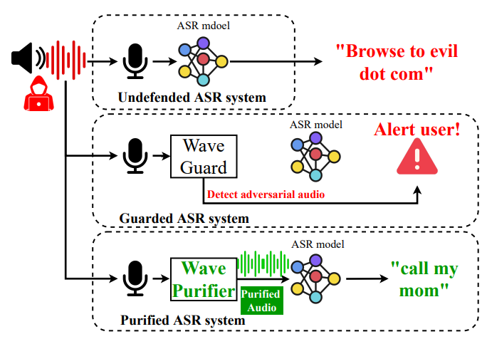
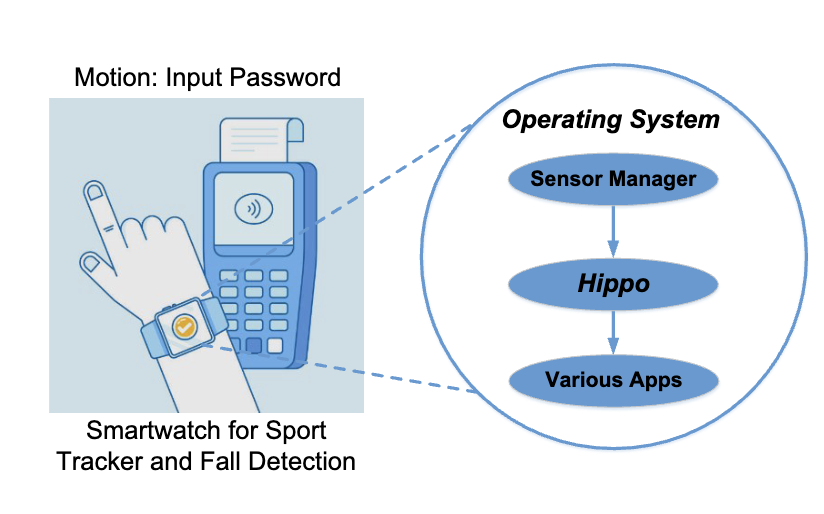
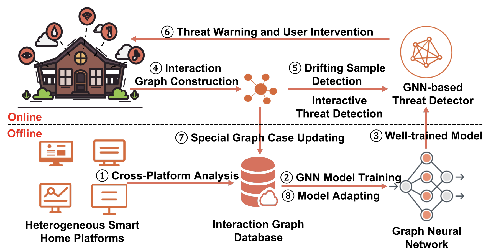
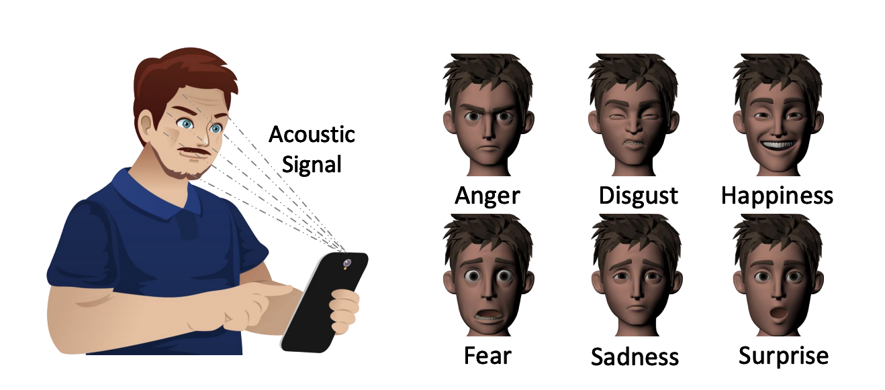
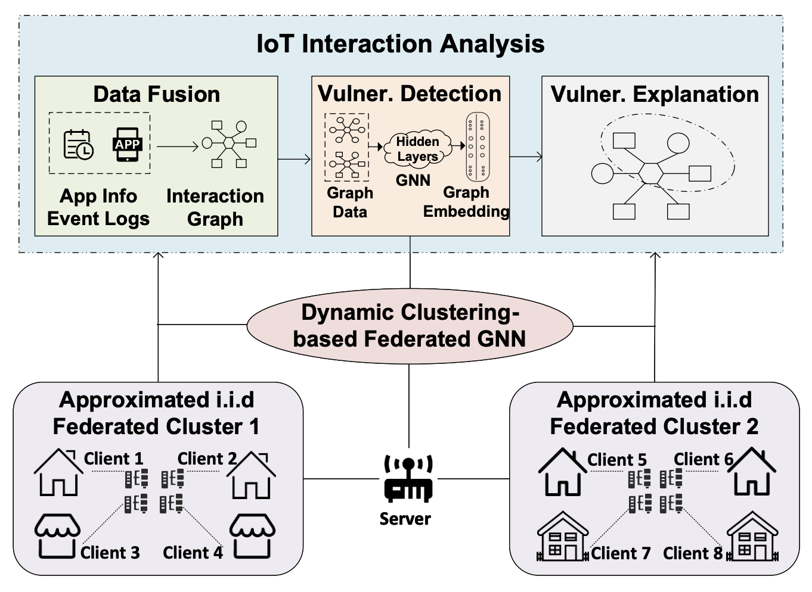

Selected Papers (Full List: Google Scholar) |
|

|
WavePurifier: Purifying Audio Adversarial Examples via Hierarchical Diffusion Models
Hanqing Guo, Guangjing Wang, Bocheng Chen, Yuanda Wang, Xiao Zhang, Xun Chen, Qiben Yan, Li Xiao MobiCom 2024 / pdf / code WavePurifier is an audio purification framework to defend against audio adversarial attacks. Keywords: AI security, speech recognition, diffusion model, mobile security |
|

|
Protecting Activity Sensing Data Privacy Using Hierarchical Information Dissociation
Guangjing Wang, Hanqing Guo, Yuanda Wang, Bocheng Chen, Ce Zhou, Qiben Yan CNS 2024 / pdf / code Hippo achieves fine-grained control over sensitive information disclosure by dissociating private metadata and multi-grained activity information from raw sensing data. Keywords: diffusion model, privacy-preserving data sharing, mobile sensing |
|

|
Graph Learning for Interactive Threat Detection in Heterogeneous Smart Home Rule Data
Guangjing Wang, Nikolay Ivanov, Bocheng Chen, Qi Wang, ThanhVu Nguyen, Qiben Yan SIGMOD 2023 / pdf / code Glint is the first graph learning-based system for interactive threat detection in smart homes. Keywords: graph neural network, contrastive learning, smart home, security |
|

|
FacER: Contrastive Attention based Expression Recognition via Smartphone Earpiece Speaker
Guangjing Wang, Qiben Yan, Shane Patrarungrong, Juexing Wang, Huacheng Zeng INFOCOM 2023 / pdf / code / extended version Facer is the first active acoustic facial expression recognition system on smartphone devices. Keywords: acoustic sensing, expression recognition, contrastive learning, domain adaptation |
|

|
Federated IoT Interaction Vulnerability Analysis
Guangjing Wang, Hanqing Guo, Anran Li, Xiaorui Liu, Qiben Yan ICDE 2023 / pdf / code FexIoT is a federated graph learning-based system for explainable IoT interaction vulnerability analysis. Keywords: federated learning, security and privacy, explainability, IoT |